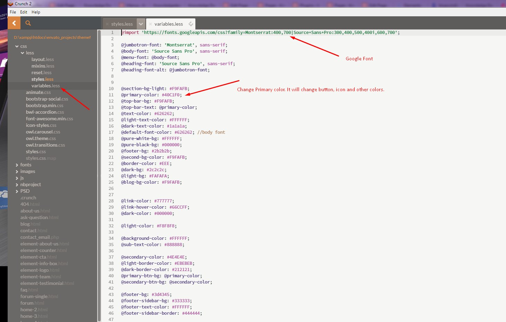
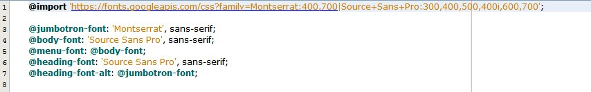
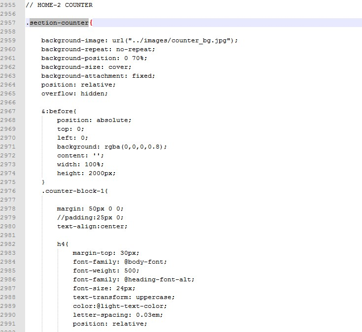
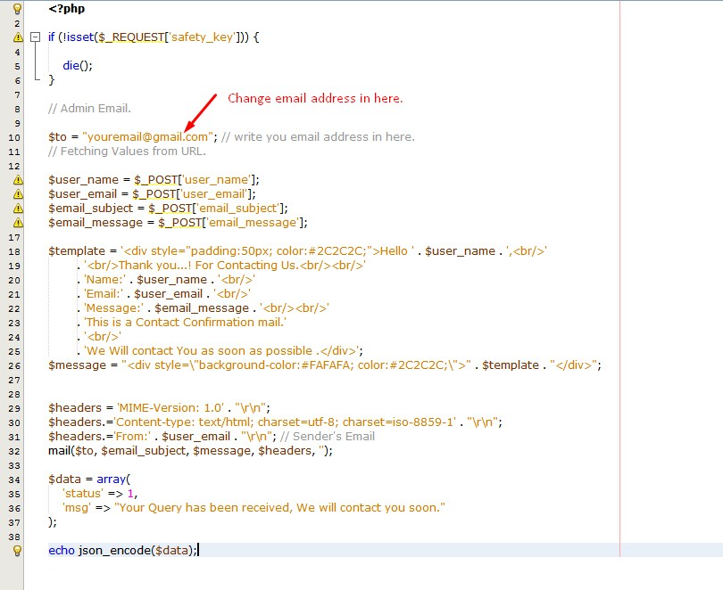

Knowledge Desk - Responsive Knowledgebase HTML5 Template
- Created: 10/08/2016
- latest update: 12/01/2023
- by: Md Mahbub Alam Khan
- https://bluewindlab.net
- Email: hkhan.cse@gmail.com
If you like this template please spare a minute to rate it. If you want any support, Please feel free to contact me via my profile page https://themeforest.net/user/xenioushk
Template Overview
Knowledge Desk is a modern looking HTML5 template designed & developed for Knowledgebase Websites in mind. It works smoothly on your Computer, or on your tablet and mobile devices. It’s comes with eye catching features, such as animates boxes, contact form section, question submission form, share boxes and much more.
Features
- Bootstrap 3 Framework.
- 3 Home Page Layout.
- Modern and Very Clean looking Design
- Unique & Creative design
- HTML5 & CSS3
- Responsive Template
- Font-awesome icon font.
- Free Fonts used
- Contact Form
- 404 Page
- Multi-Pages
- Latest jQuery Version
- Developer Friendly Code
- Well Documented.
- & much more…
25+ HTML5 Templates
-
Home Page 1 (index.html)
-
Home Page 2 (home-2.html)
-
Home Page 3 (home-3.html)
-
Home Page 4 (home-4.html)
-
Home Page 5 (home-5.html)
-
Home Page 6 (home-6.html)
-
Home Page 7 (home-7.html)
-
Home Page 8 (home-8.html)
-
About Us (about-us.html)
-
404 (404.html)
-
blog (blog.html)
-
Ask A Question (ask-a-question.html)
-
contact(contact.html)
-
FAQ(faq.html)
-
Forum(forum.html)
-
Forum-single(forum-single.html)
-
kb-category(kb-category.html)
-
kb-single(kb-single.html)
-
single(single.html)
Less
This template built with LESS. Inside the directory css/less you will find all less files where variables.less declares all colors and variables and layout.less mainly contain all necessary declaration for css. style.less should be compiled to css/style.css. Other two less files mixins.less and reset.less are for common CSS behaviour.
We have used "crunch2" less compiler to generate CSS from less file. It's FREE and very easy to use. You can download it from following link- https://getcrunch.co/
Please follow the steps to compile template LESS file.
Step 01:
From Crunch 2 menu open project/template files and select "styles.less" file.
Step 02:
Next, from Crunch 2 menu click "Crunch!".
Step 03:
Compiler will compile "styles.less" to "styles.css" file and display success message bottom of Crunch 2 editor.

Step 04:
Open and edit "css/less/variables.less" file to change font family, primary color and other options.

Structure
All the directories and files are well organized as it shown on the image bellow. Same file tree has been applicable for all HTML files
HTML File Structure
This template is a mobile friendly (responsive) layout which is designed based on Twitter Bootstrap v3.*. See our HTML file structure which is in index.html. Your contents go inside container.
CSS File Structure
We are using 7 CSS files in this template and we separated styles for improving convenience to edit this template. If you're going to use this template in production we recommend you to merge all stylesheets into one file (for decreasing HTTP queries).

jQuery File Structure
There are 11 jQuery files including necessary plugins, all of them be found in jsfolder of home directory. custom-scripts.js This file must go all the way down to other files and plugins for app landing page. This file contains custom codes
Logo Change
Hedaer Logo Screenshot

Template Font
We have used google font Open Sans. Font used in the top of the file less/variables.less

Animation
We used WOW plugin to trigger animations on scroll. Here are some animation classes we used in this Template. To learn more about WOW please read their Documentation
1. fadeIn
2. fadeInLeft
3. fadeInRight
4. fadeInUp
5. fadeInDown
6. fadeInLeftBig
7. fadeInRightBig
8. fadeInUpBig
9. fadeInDownBig
Background
We used several background images in our template. You'll find the code in the file css/less/layout.less. Thess code will be available after the compilation of the layout.less and written in the css/layout.css in the. Examples are given in the screenshot
In the layout.less

In the index.html

Google Map
For contact page Google Map, open the file js/custom-scripts.js and look for the line 442/443 and change the lat, lng value according to your map location

Contact Form
Template comes with Ajax powered functional contact form feature. You just need to set your email address in 'contact_email.php' file and user will be able to send email to your address.

Change Log
2023, 21 September - v 1.0.4
- Fixed: Template minor bugs.
2023, January, 12 - v 1.0.3
- Template Stylesheet.
- Update documentation.
2017, July, 25 - v 1.0.2
- Added 3 New Home Pages. Now total 8 Home page layouts.
- Added elements( Info Box/ Counter/Testimonials/Logos/Teams/CTA) HTML5 files.
- Added option to disable sticky menu.
- Added option for PARALLEX background. Check Home-6.html layout.
- Update font awesome.
- Update documentation.
2016, October, 25 - v 1.0.1
- Added 2 Home Pages
- Added Ask A Question Template
- Added functional contact form.
2016, October, 15 - v 1.0.0
- Initial release
Sources and Credits
-
jQuery
-
Bootstrap
-
BWL Searchable Accordion jQuery Plugin
-
Google Fonts
-
Owl Carousel
-
Font Awesome
-
Google Maps API
-
Freepik.com
-
Pexels.com